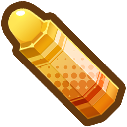
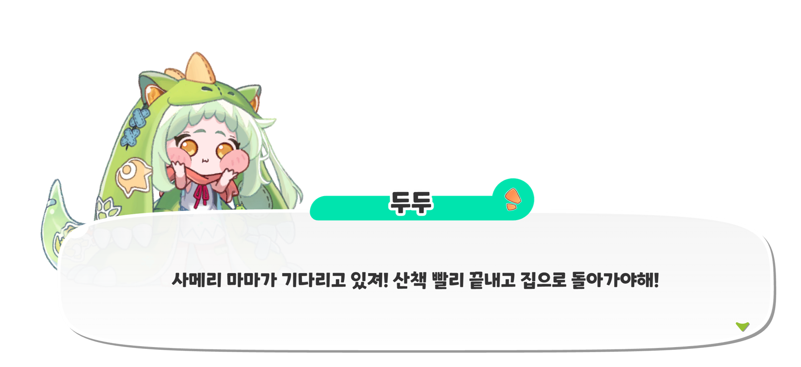

A LITTLE HOP, A BIG ADVENTURE
두두의 폴짝폴짝 대모험✧
엄마를 만나러 가는 두두의 작은 모험. 네 지역을 달리는 스토리와 세 단계의 정밀 점프 챌린지를 즐겨보세요.
손으로 그린 듯
말랑한 모험✳
말랑한 모험✳
본편 · 1 / 4수인숲
누적 00:00.000:00.0재시도 0 · 피격 0
15:00

0/ 9 0/ 0
L SHIFT · 대시 준비SPACE · 짧게 / 길게 · ↓ 아래보기

두두의 귀갓길
←→ 이동SPACE 점프 / 2단 점프↓ 길게 눌러 아래보기↓ + SPACE 모든 공중 발판 내려가기L SHIFT 대시 · 공중 1회R 구간 재시작ESC 쉬어가기
일반 완주 숙련 8~10분 / 초심 10~13분 · 황금 크레파스 9개 올 컬렉션 시 특별 보상 분기